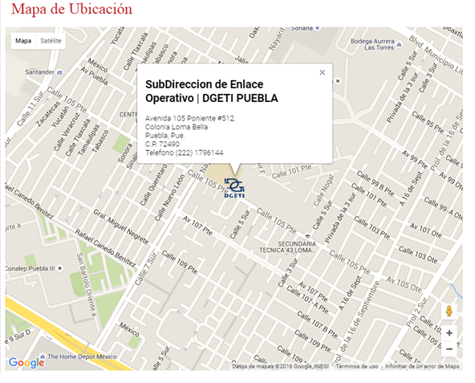

CBTis N°16
¿Quienes somos?
- Bachillerato Tecnológico, modalidad escolarizada
- A los jóvenes egresados de secundaria que deseen seguir estudiando, como a quienes requieren cursar una carrera técnica para incorporarse al mercado laboral.
- La DGETI coordina Centros Educativos a Nivel Nacional:
- • 288 Centros de Bachillerato Tecnológico Industrial y de Servicios (CBTis)
- • 168 Centros de Estudios Tecnológicos Industrial y de Servicios (CETis)
- • 812 Colegios de Estudios Científicos y Tecnológicos (CECyTES), que operan bajo un sistema descentralizado.
- 3 años
- Educación Escolarizada: Esta modalidad es una formación bivalente, por una parte se egresa con una carrera técnica con los conocimientos, habilidades y destrezas para integrarse al sector productivo como técnico profesional y por otra parte ofrece al egresado la posibilidad de continuar sus estudios del nivel superior.
- Las materias propedéuticas que se cursan son prácticamente las mismas que en el bachillerato general, por lo que se prepara para estudiar una carrera profesional del nivel superior.
- El plan de estudios incluye módulos para la formación tecnológica que te preparan como técnico del nivel medio superior en algunas de las carreras técnicas que se ofertan.
- Al concluir cada módulo, los estudiantes reciben un certificado.
- Estos certificados se plantean como “salidas laterales”, que permiten que los estudiantes tengan reconocimiento por sus estudios, aun cuando el estudiante no complete todo el plan de estudios del nivel medio superior.
- Obtienes el certificado de bachillerato y una carta de pasante; Una vez cubiertos los requisitos correspondientes, el egresado obtiene el título y la cédula profesional de la carrera cursada, registrados ante la Dirección General de Profesiones de la Secretaría de Educación Pública.
Tipo de Bachillerato:
¿A quién va dirigido?
Cobertura:
Duración:
Modalidad:
Ventajas que ofrece esta modalidad:
Al concluir tus estudios obtendrás:
- Está organizado en seis semestres e integrados por asignaturas y módulos que están distribuidos en tres componentes de formación: básica, propedéutica y profesional cubriendo un total de 2800 horas por semestre en 16 semanas y un trabajo promedio de 30 horas de trabajo académico por semana.
- El componente de formación básica con 1200 horas: se articula con la educación básica y con la de tipo superior, aborda los conocimientos esenciales de la ciencia, la tecnología y las humanidades, aporta fundamentos a la formación propedéutica y a la profesional y está integrado por asignaturas.
- Se distribuyen en cuatro campos de conocimiento, como son 1 Matemáticas, 2 Ciencias naturales, 3 Comunicación, 4 Humanidades, 5 Historia, sociedad y tecnología.
- El componente de formación propedéutica con 480 horas: se articula con la educación superior, pone énfasis en una profundización de los conocimientos disciplinares que favorezca una mejor incorporación de los egresados a instituciones de ese tipo educativo y está integrado por asignaturas.
- Se organiza en tres áreas que permiten la convergencia e integración de los saberes previamente adquiridos: Físico –matemática; Químico – biológica y Económico – administrativa. (Sus seis asignaturas se ubican en el 5º y 6º Semestres, tres de ellas son comunes para las tres áreas, dos más son específicas para cada área y la última es elegida por el estudiante de acuerdo con la oferta del plantel.
- El componente de formación profesional con 1200 horas: es la formación tecnológica se da a partir del segundo semestre, te preparan como técnico del nivel medio superior, se organiza en carreras estructuradas en módulos para desarrollar las competencias profesionales correspondientes al campo de formación profesional de la carrera técnica elegida.
Plan de estudios:
Click aqui para más información
Ubicación
Dirección: Fracc. Ricardo Flores Magon Domicilio Conocido S/N. Atlixco, Puebla. CP 74240
¿Qué es La DGETI?
DGETI
La Dirección General de Educación Tecnológica Industrial es una dependencia adscrita a la Subsecretaría de Educación Media Superior (SEMS), dependiente de la Secretaría de Educación Pública que ofrece el servicio educativo del nivel medio superior tecnológico. Actualmente la DGETI es la institución de educación media superior tecnológica más grande del país, con una infraestructura física de 442 planteles educativos a nivel nacional, de los cuales 168 son CETIS y 274 CBTIS; ha promovido además la creación de al menos 288 CECyTEs, mismos que operan bajo un sistema descentralizado. Tiene por objetivo formar bachilleres técnicos y técnicos profesionales que desarrollen, fortalezcan y preserven una cultura tecnológica y una infraestructura industrial y de servicios que coadyuven a satisfacer las necesidades económicas y sociales del país.

Misión y Visión
MISIÓN
Formar personas con conocimientos tecnológicos en las áreas industrial, comercial y de servicios, a través de la preparación de profesionales técnicos y bachilleres, con el fin de contribuir al desarrollo sustentable del país.
VISIÓN
Ser una institución que proporcione una formación integral y pertinente de acuerdo a las exigencias derivadas de la competitividad mundial y el entorno y vocación local, además de tener la flexibilidad para satisfacer los intereses, aspiraciones y posibilidades de la población que demanda este nivel educativo en nuestro plantel.
Datos del Alumno
Nombre: María del Carmen Hernández Márquez
Grado: 4to. Semestre
Grupo: "E"
Especialidad: Programación
Submodulo: Desarrolla Aplicaciones Moviles